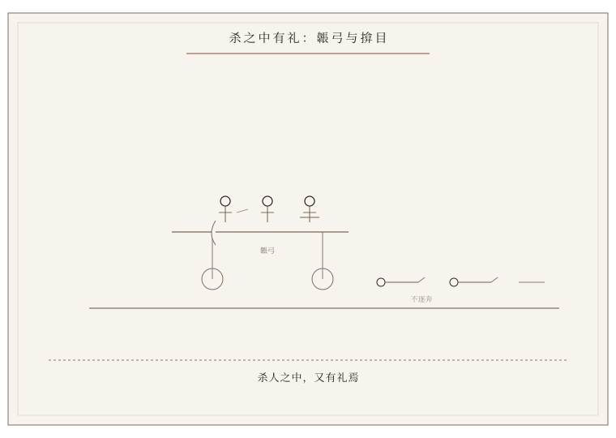

檀弓下 · 四·六十 · 第 385 课
工尹商阳与陈弃疾追吴师，及之。陈弃疾谓工尹商阳曰：「王事也，子手弓，而可手弓。」「子射诸。」射之，毙一人，韔弓。又及，谓之，又毙二人。每毙一人，揜其目。止其御曰：「朝不坐，燕不与，杀三人，亦足以反命矣。」孔子曰：「杀人之中，又有礼焉。」
说什么事：楚工尹商阳与陈弃疾追吴国败兵，追上了。弃疾劝商阳：「这是王事，你是善射之人，可以拉弓了。」「你射吧。」商阳射了一箭，毙一人，随即把弓收进弓袋。又追上了，弃疾再说，又毙二人。每毙一人，商阳都遮住自己的眼睛。他止住御者说：「朝见时我不坐于堂上，燕饮时我不与于席末；已经杀了三人，也足够回去复命了。」孔子说：「杀人之中，也有礼。」
落在哪一层：以「足而止」立杀之节。礼不反对杀敌，礼反对追杀到底。
为何编在此位：上节论离国之礼，此节论战场之礼。一在人情之微，一在杀人之际，而其则一：有所止。
【经】工尹商阳与陈弃疾追吴师，及之。陈弃疾谓工尹商阳曰：「王事也，子手弓，而可手弓。」「子射诸。」射之，毙一人，韔弓。又及，谓之，又毙二人。每毙一人，揜其目。止其御曰：「朝不坐，燕不与，杀三人，亦足以反命矣。」孔子曰：「杀人之中，又有礼焉。」
【注】工尹，楚官名。弃疾，楚公子弃疾也。以鲁昭八年帅师灭陈，县之，楚人善之，因号焉。／商阳仁，不忍伤人，以王事劝之。／不忍复射。毙，仆也。韔，韬也。／揜其目，不忍视之。／朝燕于寝，大夫坐于上，士立于下，然则商阳与御者皆士也。兵车参乘，射者在左，戈盾在右，御在中央。／善之。
【疏】此一节论杀人有礼之事，各依文解之。／案《春秋传》楚皆以尹为官名也，故知工尹，楚官名也。／「子手弓，而可手弓」者，弃疾谓商阳射吴之奔者，云子是手弓之人，谓是能弓之手。而可手弓者，谓其堪可称此能弓之手，谓宜须射也。又《家语》云：「楚伐吴，工尹商阳与弃疾追吴师，及之。弃疾曰：『王事也，子手弓而可。』商阳手弓。弃疾曰：『子射诸。』射之，毙一人，韔其弓。」则此分句为异，解义亦别。言「手弓」者，令其彀弓而射之。未知孰是，故两存焉，附之以广闻见也。／「孔子曰：杀人之中，又有礼焉」者。言其既杀人之中，又有礼，则「韔弓」、「揜目」等是也。案《左氏传》戎昭果毅，获则杀之。商阳行仁，而孔子善之。传之所云，谓彼勍敌与我决战，虽是胡耇，获则杀之。此谓吴师既走而后逐之义，故云「又及一人」，则是不逐奔之义，故以为有礼也。
工尹 楚官名，掌工之尹。
陈弃疾 楚公子弃疾，因灭陈而号。
及之 追上了。
手弓 把弓拿在手里，即引弓待发。
韔弓 把弓收进弓袋。韔，韬。
毙 倒毙。注「仆也」。
揜其目 遮住自己的眼睛。
止其御 叫御者停车。
朝不坐 朝见时不得坐于堂上。
燕不与 燕饮时不得与会。
反命 回去复命。
工尹商阳与陈弃疾追击吴国的败兵，追上了。陈弃疾对商阳说：「这是王事，你是善射之人，可以引弓了。」「你射吧。」商阳射了一箭，毙一人，随即把弓收进弓袋。又追上，弃疾又劝，又毙二人。每毙一人，商阳都遮住眼睛。他叫御者停车，说：「朝见时我不坐堂上，燕饮时我不列席末，已经杀了三人，也够回去复命了。」孔子说：「杀人之中，也有礼。」
此章记一场追击败兵的战事。其中一个人每射一箭，就收一次弓；每毙一人，就遮一次眼；杀到第三人，就叫停车。
孔子说：这也是礼。
第一层 「追吴师」：追是追败者 注意此节之起点：吴师已走。
追败兵与对决战，礼上判然两事。 疏辨之极明：「彼勍敌与我决战，虽是胡耇，获则杀之。此谓吴师既走而后逐之义……则是不逐奔之义，故以为有礼也。」
此一节辨的是「不逐奔」三字：敌人既已奔逃，不可穷追。
第二层 「王事也」：劝射的理由 弃疾劝商阳，用的不是「杀敌为勇」，而是「王事也」。
此三字，把个人之杀，抬成国家之事。 商阳之仁，因而不成为「违命」；弃疾之劝，因而不成为「迫人」。
第三层 「毙一人，韔弓」 射一箭，收一次弓。
收弓一动作，是杀之中断。 注云「不忍复射」——每杀一人，都要重新决一次心。
第四层 「每毙一人，揜其目」 遮眼。
此一动作最不容伪。 一个人可以奉命而杀，不能奉命而不见。遮眼者，是不忍视，不是不见。
第五层 「朝不坐，燕不与」：一句身份的自陈 注云「商阳与御者皆士也」——士在朝则立，在燕则不与。
此一句是他止步的理由：我是士，我的本分只到这里。 杀三人，已足复命；再多，则越了自己的分。
此一节最见古人之「以位自限」：不是不愿多杀，是不可多领。
第六层 「亦足以反命矣」 「足」字是此章的关键。
礼在杀之中所立的，正是一个「足」字。 无足则滥，有足则止。
第七层 「杀人之中，又有礼焉」 孔子此语，承认「杀人」与「有礼」可以并存。
此一承认，不为战争辩护，只为在战争里给人留一条线。 若说「杀人无礼可言」，则战场上的人便无从自守；说「杀人之中又有礼」，则每一个持弓的人仍有一条可守之界。
与今日何干 今之竞争，多以「彻底」为能，以「不留余地」为强。
此章给一句：够，就停。
| 左 | 右 |
|---|---|
| 追吴师 | 追败者 |
| 王事也 | 抬私为公 |
| 子手弓 | 劝其引弓 |
| 毙一人 | 一杀 |
| 韔弓 | 一断 |
| 揜其目 | 不忍视 |
| 朝不坐燕不与 | 士之分 |
| 足以反命 | 足而止 |
| 杀之中有礼 | 一条线 |
画一辆兵车的侧视，视点平视。车身一厢两轮，厢中并立三人：左者持一张弓，弓已半收入一只长袋中；中者执辔；右者持一柄短戈。车前地上卧着两具人形，皆头朝车后，身形横置；更远处再卧一具，最小。弓者以一手遮在额前，作掩目之状。不画文字。赭色只用在那只收弓的袋口。
